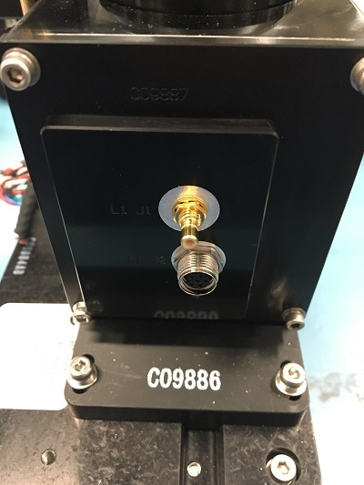
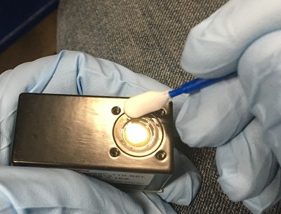
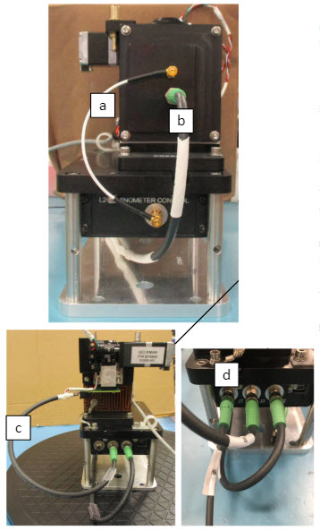
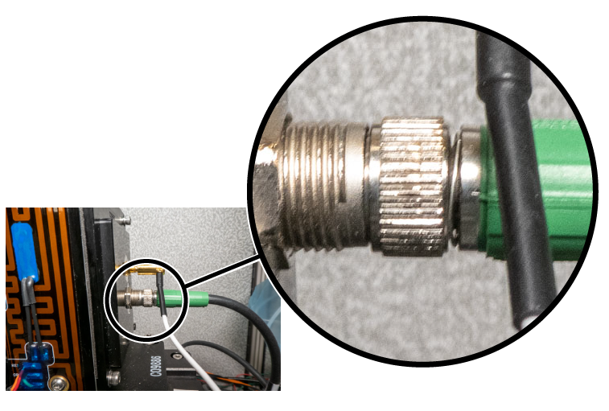
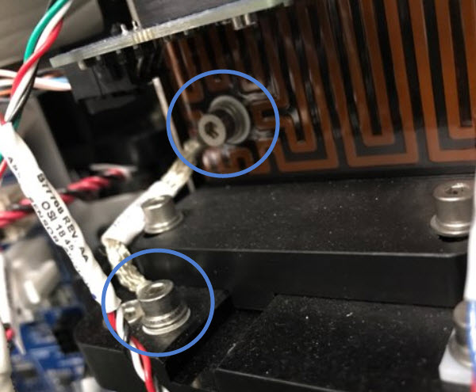

This topic includes information about how to clean the luminometer.
Safety Reminder
Servicing the DxI 9000 instrument involves potential risks for pinch and puncture, electrical shock, and exposure to hazardous materials. You must mitigate these risks by taking appropriate countermeasures. See
Safety for more information.
Warning: To avoid delays in temperature equilibrium time, you should turn off the instrument for no longer than 60 minutes while you perform this procedure. If you keep the instrument turned off for a longer period of time, you may need additional time for the luminometer temperature to stabilize after the target temperature has been met. Contact technical support for more information, as necessary.
Open the right rear bi-fold door to gain access to the luminometer.
Clean the luminometer.
Moisten a polyester swab with isopropyl alcohol.
Note: DO NOT use a cotton swab or similar material because it may leave behind debris. The best practice is to use Beckman brand swabs.
Open the luminometer door.
Warning: You should only open the luminometer door while actively cleaning. Otherwise, keep the door closed at all times to prevent damage to the PMT, which is extremely sensitive to light.
Insert the swab into the luminometer. Clean the front and back of the interior and the underside of the door.
Close the luminometer door and be sure it is fully seated in the closed position.
Repeat drift detection. If it passes, no further cleaning is required.
Disconnect the lumi power, USB, temperature, motor, and sensor cables.
Remove the screws that secure the base plate to the chassis.
Note: The number of screws may vary depending on system serial number.
Remove the luminometer subsystem from the instrument.
Tip: To make it easier to remove the luminometer subsystem, remove the chassis fan first (two screws, 3mm driver).
Disconnect the PMT cables and remove the gold nut and washer (1/4" socket) and silver nut (11mm socket) and retain these items for reassembly.

Remove the four screws (2.5mm hex driver) that secure the PMT cover plate to the chassis, and remove the PMT plate. Do not discard the PMT plate.
Remove the four screws (2.5mm driver) that secure the PMT assembly and remove the PMT assembly from the lumi chassis.
Warning: Only expose the PMT front window to ambient light while actively cleaning. Otherwise, keep it covered at all times to prevent damage to the PMT, which is extremely sensitive to light.
Moisten a new polyester swab with isopropyl alcohol.
Clean the PMT front window and its surroundings with a moistened cleaning swab until it is free from any adhesive, vessel shavings, fluid, etc. Use a dry swab to clear any remaining smudges.

Clean both sides of the PMT mounting bracket with a new moistened swab, in the same manner as the previous step.
Install the mounting bracket back onto the PMT.
Install the PMT assembly back onto the lumi chassis.
Before installing the PMT assembly, inspect the inner lumi chassis and clean and remove debris, as needed.
Install the PMT cover plate.
Install the gold washer and nut and the silver nut back onto the associated connectors. Do not over-tighten.
Connect the luminometer cables.

a
Luminometer signal cable
b
Luminometer control cable
c
Luminometer LED cable
d
Luminometer power cable
Note: All green connectors (B, C, D) should be torqued to 0.2 N-m when possible using the applicable tool (the recommended Phoenix torque driver listed above). See the image below for an example of good connection for the luminometer control, LED, and power cables (green connectors).

Connect the Luminometer signal cable. Push in a gold connector at the PMT (upper) side and the other at the board housing (lower) side.
Connect the Luminometer control cable:
Align the cable connector until it keys to the mating connector on the PMT (upper) side, and thread in.
Align the cable connector until it keys to the mating connector on the board housing (lower) side, and thread in.
Connect the Luminometer LED cable:
Align the cable connector until it keys to the mating connector on the board housing (lower) side, and thread in.
Plug the cable connector into the mating connector on the LED (upper) side.
Connect the Luminometer power cable. Align the cable connector until it keys to the mating connector on the board housing (lower) side, and thread in.
Inspect the luminometer connections:
Confirm the luminometer signal cable is connected at the luminometer chassis and the board housing underneath.
Tip: Push the connector onto the terminal at both ends to be sure they are fully seated.
Confirm the luminometer control cable is connected at the luminometer chassis and the board housing underneath.
Tip: Thread the connector onto the terminal at both ends to ensure a good connection.
Confirm the luminometer LED cable is connected at the LED printed circuit board (PCB).
Tip: Push the connector onto the terminal to be sure it is fully seated.
Confirm the luminometer LED cable is connected at the board housing underneath.
Tip: Thread the connector onto the terminal to ensure a good connection.
Confirm the luminometer power cable is connected at the board housing.
Tip: Thread the connector onto the terminal to ensure a good connection.
Verify proper grounding bond (confirm screws are tight) for ground strap connecting chassis to baseplate.

Install the subsystem back into the instrument.
Note: Be sure the luminometer connectors do not bump any neighboring parts.
Secure the subsystem to the chassis with the screws.
Connect the USB, temperature, motor, and sensor cables.
Inspect interacting subsystems (Analytic PnP collet, Incubate PnP collet, Wash Wheel, Incubate Wheel) for contamination. Clean and replace parts, as needed.